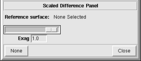

NVIZ Reference Manual
CONTENTS
Scaled Difference Panel
The Scaled Difference panel lets you exaggerate the
distance between multiple surfaces. This exaggeration does not effect
the surface properties and intersection points.
-

OPTIONS
- Reference Surface
- Shows the name(s) of all the loaded surfaces. Use this menu to select
the reference surface.
- Exag
- Sets the exaggeration difference between the reference and other
surfaces.
- None
- Turns off the scaled difference and unselects the reference surface.
- Close
- Closes the Scaled Difference panel.